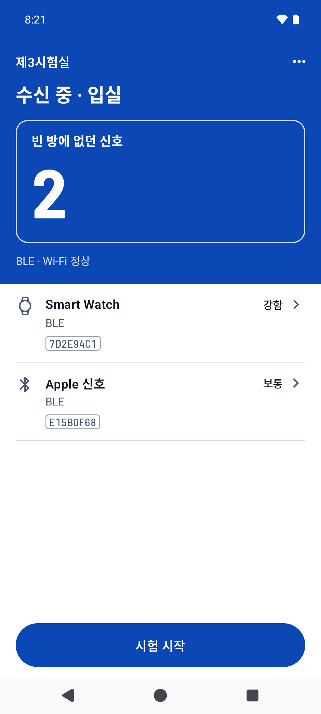
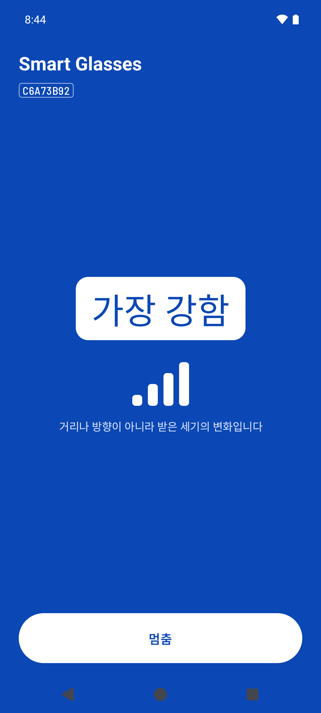

시험 중 새 신호,
조용한 알림.
시험 시작 후 새로 수신된 무선 신호를 알려주는
감독 보조 앱, 스마트 디텍터.
Android 휴대폰 한 대로 시작하세요.
Android 12 이상 무료 베타 인터넷 없이 사용
수신 중 · 12분째
Bluetooth LE · 마지막 수신 방금
설명용 예시입니다. 이 웹페이지는 무선 신호를 수신하지 않습니다.
시작 전과 비교시험 중 새로 들린 신호 확인
소리 없이 진동으로조용한 시험실에 맞춘 알림
종료 후 한 장의 보고서관측 내용과 확인 결과 기록
준비는 간단하게.
감독은 평소처럼.
사용 순서에 맞춰
실제 앱 화면을 살펴보세요.
시험 전 신호를
먼저 확인합니다.
빈 시험실에서 ‘방이 비어 있습니다’를 누르고 90초 동안 기준 신호를 수신합니다. 입실이 끝나면 남아 있는 신호를 확인하고 ‘시험 시작’을 누르세요.
이미 입실했다면 ‘이미 사람이 있습니다’를 선택하세요.

원본 크게 보기새로 들린 신호를,
큰 숫자로 확인하세요.
시험 시작 후 처음 수신한 신호를 큰 숫자와 목록으로 보여줍니다. 알림이 오면 해당 신호를 선택해 현장을 확인하세요.
시험 중에는 앱 화면을 열어 두세요.
 원본 크게 보기
원본 크게 보기 신호 세기를 보며,
현장을 확인하세요.
이동하며 선택한 신호의 수신 세기가 어떻게 변하는지 살펴봅니다. 현장을 확인하고 결과를 기록하세요.
수신 세기는 거리나 방향을 뜻하지 않습니다.

원본 크게 보기확인한 내용을,
한 장의 기록으로.
시험 종료 후 관측한 신호와 현장 확인 내용, 메모를 보고서로 확인합니다. 파일로 저장하거나 공유하세요.
수신하지 못한 시간도 보고서에 기록됩니다.
 원본 크게 보기
원본 크게 보기 예시 데이터를 사용한 앱 화면입니다.
신호를 알려주고,
판단은 사람이 합니다.
스마트 디텍터는 현장 확인을 돕는 도구입니다.
무선 신호만으로 부정행위를 판정하지 않습니다.
- 무엇을 관측하나요?
- BLE 광고, 검색 가능한 Bluetooth 기기, Wi-Fi 액세스 포인트 등 휴대폰이 수신할 수 있는 무선 신호를 관측합니다.
- 무엇까지 알 수 있나요?
- 수신된 신호와 변화를 확인할 수 있습니다. 소유자, 좌석, 촬영 여부나 부정행위 여부는 확정할 수 없습니다.
- 숫자가 0이면 어떤 뜻인가요?
- 새로 수신한 신호가 없다는 뜻입니다. 기기가 없다는 보장은 아닙니다. 신호를 내지 않는 기기는 관측되지 않을 수 있습니다.
다음 모의시험에서
직접 확인해 보세요.
감독관을 위한 기본 기능은 무료로 제공합니다.
Android 12 이상 휴대폰에서 사용할 수 있습니다.
현재 현장 검증 중인 베타입니다. 기기·환경별 탐지율은 아직 검증되지 않았으며, 공식 시험의 감독 절차를 대체하지 않습니다.
사용 전에
궁금한 점.
스마트안경이나 모든 전자기기를 찾을 수 있나요?
모든 기기를 발견할 수는 없습니다. 기기가 보내는 신호가 휴대폰에서 수신 가능한 상태여야 합니다. 연결 후 광고를 멈춘 기기, 전원이 꺼진 기기, 셀룰러만 사용하는 기기 등은 관측을 보장할 수 없습니다. 스마트안경 모델별 탐지 성능도 별도 실측이 필요합니다.
iPhone에서도 사용할 수 있나요?
iOS 버전은 개발 중입니다. 현재는 Android 12 이상에서 사용할 수 있으며, 휴대폰 제조사와 운영체제에 따라 수신 가능한 신호와 권한 설정이 달라질 수 있습니다.
앱은 어떻게 설치하나요?
이 페이지의 ‘Google Play에서 다운로드’ 버튼을 누른 뒤 Google Play의 설치 안내를 따라 주세요. Android 12 이상 휴대폰에서 사용할 수 있습니다.
인터넷이 필요하나요? 기록은 어디에 남나요?
앱을 내려받은 뒤에는 인터넷 연결 없이 단독으로 사용할 수 있습니다. 인터넷에 연결되어 있으면 앱 사용 통계(Firebase Analytics)만 보내며, 수신한 신호와 검사 기록은 보내지 않고 광고 ID는 수집하지 않습니다. 무선 관측 기록은 기기에 저장됩니다. 시험 종료 후 보고서를 직접 저장하거나 공유할 수 있고, 앱의 본부 메뉴에서 기록을 삭제할 수 있습니다.
시험 중 화면을 꺼도 되나요?
앱 화면을 열어 둔 상태로 사용해 주세요. 화면을 벗어나면 수신이 중단됩니다. 시험 중 다시 돌아왔을 때는 ‘다시 수신’을 누르고 수신 상태를 확인하세요. 수신하지 못한 시간은 보고서에 남습니다.
학교·학원에서 함께 사용하고 싶다면.
여러 시험실의 운영이나 설치 지원이 필요한가요?
현장의 사용 환경과 필요한 기능을 알려 주세요.